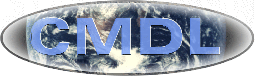
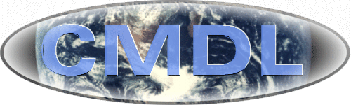

|
 Climate Monitoring & Diagnostics
Laboratory |
|
 Climate Monitoring & Diagnostics
Laboratory |
The
Climate Monitoring and Diagnostics Laboratory (CMDL) of the National
Oceanic and Atmospheric Administration, in Boulder, Colorado, conducts
research related to atmospheric constituents that are capable of forcing
change in the climate of the Earth or that may deplete the ozone layer.
CMDL monitors greenhouse gases, aerosols, ozone, ozone-depleting
gases and solar and terrestrial radiation at global sites including four
Baseline Observatories. For more information about CMDL, visit our online
overview.
|
||||
|
[Aerosols
& Radiation] [Carbon
Cycle-Greenhouse Gases] [Highlights]
[Research] [Publications] |
|||
Climate Monitoring &
Diagnostics Laboratory
325 Broadway R/E/CG
Boulder, CO 80303
(303) 497-6074